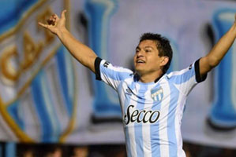
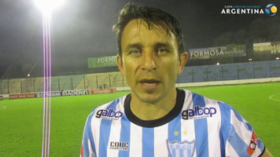
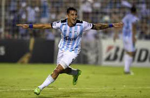
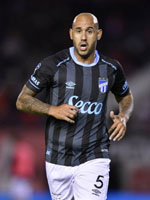

Jugadores Históricos
- Luis Miguel Rodriguez: conocido popularmente como Pulga Rodríguez, es un futbolista argentino. Juega como delantero o mediapunta y su equipo actual
es Atlético Tucumán de la Liga Profesional Argentina.
Es el segundo máximo goleador histórico del Club Atlético Tucumán, donde además es recordado por haber logrado el ascenso a la Primera División en
2009 y 2015 y obtener el subcampeonato de la Copa Argentina 2016-17. Es ídolo en Colón, fue elegido como figura de la Copa de la Liga Profesional 2021,
en la que consiguió el primer título del club en su historia el 4 de junio de 2021.

- Diego Barrado: es un exfutbolista y actual entrenador argentino. Jugaba como mediocampista. Actualmente dirige a la reserva de River.

- Fernando Zampedri: es un futbolista profesional argentino nacionalizado
chileno, que se desempeña como delantero y actualmente integra el plantel de
la Universidad Católica de la Primera División de Chile. Es capitán del equipo y, además, es el máximo
goleador histórico del club. Al finalizar la Primera División de Chile 2023, igualó a Eladio Zárate como
uno de los dos únicos jugadores en obtener el título de goleo en cuatro torneos largos. En 2024, alcanzó
un récord al convertirse en el primer futbolista chileno en debutar en Atlético de Tucumán, marcando un
hito en el fútbol chileno.

- Juan Ignacio Mercier: es un exfutbolista argentino, jugaba como centrocampista y su último equipo fue Club Atlético Fénix de la Primera B. Disputó
tres encuentros con la selección Argentina. Es considerado uno de los mejores "Doble 5" de los últimos 40 años del futbol argentino junto con su par
Néstor Ortigoza.En 2018-2019 fue por préstamo al Decano metiendo 33 goles en 22 partidos.

- Josu"El Pichi Pela": Debutó en Atlético de Tucumán en 1933, marcando más de 33 goles en una temporada. Logrando así, ser
considerado uno de los mejores 9 de su época, siendo deseado por los grandes de Europa, como el Porto o el Lille Olympique. No llegando a nada tras ser
estafado por un club chileno anónimo de la 3era división.